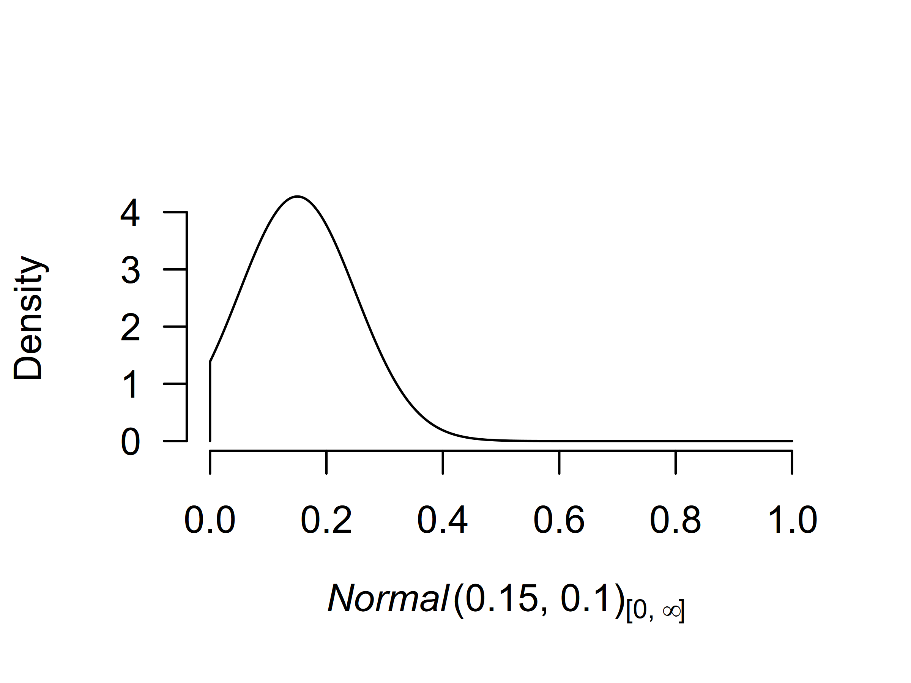
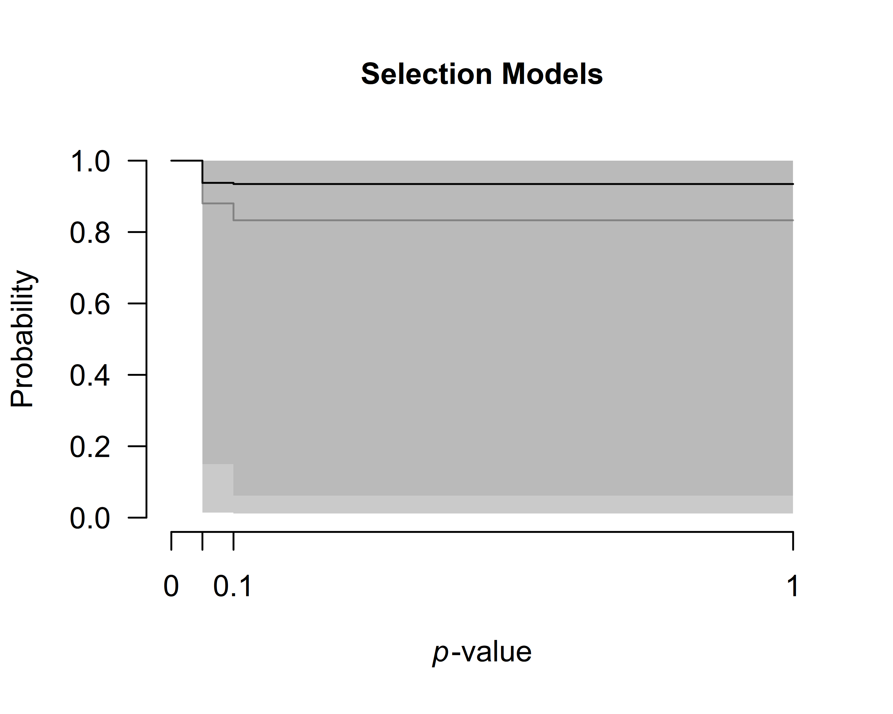

Fitting custom meta-analytic ensembles
František Bartoš
2021-07-15
Source:vignettes/CustomEnsembles.Rmd
CustomEnsembles.RmdBy default, the RoBMA() function specifies models as a combination of all supplied prior distributions (across null and alternative specification), with their prior model weights being equal to the product of prior distributions’ weights. This results in the 36 meta-analytic models using the default settings (Bartoš et al., 2021)\(^1\). In another vignette, we illustrated that RoBMA can be also utilized for reproducing Bayesian Model-Averaged Meta-Analysis (BMA) (Gronau et al., 2017). However, the package was built as a framework for estimating highly customized meta-analytic model ensembles. Here, we are going to illustrate how to do exactly that (see Bartoš et al. (2020) for a tutorial paper on customizing the model ensemble with JASP).
Please keep in mind that all models should be justified by theory. Furthermore, the models should be tested to make sure that the ensemble can perform as intended a priori to drawing inference from it. The following sections are only for illustrating the functionality of the package. We provide a completely discussion with the relevant sources in the Example section of Bartoš et al. (2021).
The dataset
To illustrate the custom model building procedure, we use data from the infamous Bem (2011) “Feeling the future” pre-cognition study. We use coding of the results as summarized by Bem in one of his later replies (Bem et al., 2011).
library(RoBMA)
#> Loading required namespace: runjags
#> module RoBMA loaded
#> This is a 2.0 version of the RoBMA package (see NEWS for detailed overview of the changes).
data("Bem2011", package = "RoBMA")
Bem2011
#> d se study
#> 1 0.25 0.10155048 Detection of Erotic Stimuli
#> 2 0.20 0.08246211 Avoidance of Negative Stimuli
#> 3 0.26 0.10323629 Retroactive Priming I
#> 4 0.23 0.10182427 Retroactive Priming II
#> 5 0.22 0.10120277 Retroactive Habituation I - Negative trials
#> 6 0.15 0.08210765 Retroactive Habituation II - Negative trials
#> 7 0.09 0.07085372 Retroactive Induction of Boredom
#> 8 0.19 0.10089846 Facilitation of Recall I
#> 9 0.42 0.14752627 Facilitation of Recall IIThe custom ensemble
We consider the following scenarios as plausible explanations for the data, and decide to include only those models into the meta-analytic ensemble:
- there is absolutely no precognition effect - a fixed effects model assuming the effect size to be zero (\(H_{0}^f\)),
- the experiments measured the same underlying precognition effect - a fixed effects model (\(H_{1}^f\)),
- each of the experiments measured a slightly different precognition effect - a random effects model (\(H_{1}^r\)),
- there is absolutely no precognition effect and the results can be explained away with publication bias, modeled with one of the following publication bias adjustments: - 4.1) one-sided selection operating on significant p-values (\(H_{1,\text{pb1}}^f\)), - 4.2) one-sided selection operating on significant and marginally significant p-values (\(H_{1,\text{pb2}}^f\)), - 4.3) PET correction for publication bias which adjusts for the relationship between effect sizes and standard errors (\(H_{1,\text{pb3}}^f\)), - 4.4) PEESE correction for publication bias which adjusts for the relationship between effect sizes and standard errors squared (\(H_{1,\text{pb4}}^f\)).
If we were to fit the ensemble using the RoBMA() function and specifying all of the priors, we would have ended with 2 (effect or no effect) * 2 (heterogeneity or no heterogeneity) * 5 (no publication bias or 4 ways of adjusting for publication bias) = 20 models. That is 13 models more than requested. Furthermore, we could not specify different parameters for the prior distributions for each model, which the following process allows (but we do not utilize it).
We start with fitting only the first model using the RoBMA() function and we will continuously update the fitted object to include all of the models.
Model 1
We initiate the model ensemble by specifying only the first model with the RoBMA() function. We explicitly specify prior distributions for all components and set the prior distributions to correspond to the null hypotheses and set seed to ensure reproducibility of the results.
fit <- RoBMA(d = Bem2011$d, se = Bem2011$se, study_names = Bem2011$study,
priors_effect = NULL, priors_heterogeneity = NULL, priors_bias = NULL,
priors_effect_null = prior("spike", parameters = list(location = 0)),
priors_heterogeneity_null = prior("spike", parameters = list(location = 0)),
priors_bias_null = prior_none(),
seed = 1)We verify that the ensemble contains only the single specified model with the summary() function by setting type = "models".
summary(fit, type = "models")
#> Call:
#> RoBMA(d = Bem2011$d, se = Bem2011$se, study_names = Bem2011$study,
#> priors_effect = NULL, priors_heterogeneity = NULL, priors_bias = NULL,
#> priors_effect_null = prior("spike", parameters = list(location = 0)),
#> priors_heterogeneity_null = prior("spike", parameters = list(location = 0)),
#> priors_bias_null = prior_none(), seed = 1)
#>
#> Robust Bayesian meta-analysis
#> Models overview:
#> Model Prior Effect Prior Heterogeneity Prior Bias Prior prob. log(marglik)
#> 1 Spike(0) Spike(0) 1.000 -3.28
#> Post. prob. Inclusion BF
#> 1.000 InfModel 2
Before we add the second model to the ensemble, we need to decide on the prior distribution for the mean parameter. If pre-cognition were to exist, the effect would be small since all casinos would be bankrupted otherwise. The effect would also be positive, since any deviation from randomness could be characterized as an effect. Therefore, we decide to use a normal distribution with mean = 0.15, standard deviation 0.10, and truncated to the positive range. This sets the prior density around small effect sizes. To get a better grasp of the prior distribution, we visualize it using the plot()) function (the figure can be also created using the ggplot2 package by adding plot_type == "ggplot" argument).

We add the second model to the ensemble using the update.RoBMA() function. The function can also be used to many other purposes - updating settings, prior model weights, and refitting failed models. Here, we supply the fitted ensemble object and add an argument specifying the prior distributions of each components for the additional model. Since we want to add Model 2 - we set the prior for the \(\mu\) parameter to be treated as a prior belonging to the alternative hypothesis of the effect size component and the remaining priors treated as belonging to the alternative hypotheses. If we wanted, we could also specify prior_weights argument, to change the prior probability of the fitted model but we do not utilize this option here and keep the default value, which sets the prior weights for the new model to 1. (Note that the arguments for specifying prior distributions in update.RoBMA() function are prior_X - in singular, in comparison to RoBMA() function that uses priors_X in plural.)
fit <- update(fit,
prior_effect = prior("normal", parameters = list(mean = .15, sd = .10), truncation = list(lower = 0)),
prior_heterogeneity_null = prior("spike", parameters = list(location = 0)),
prior_bias_null = prior_none())We can again inspect the updated ensemble to verify that it contains both models. We see that Model 2 notably outperformed the first model and attained all of the posterior model probability.
summary(fit, type = "models")
#> Call:
#> RoBMA(d = Bem2011$d, se = Bem2011$se, study_names = Bem2011$study,
#> priors_effect = NULL, priors_heterogeneity = NULL, priors_bias = NULL,
#> priors_effect_null = prior("spike", parameters = list(location = 0)),
#> priors_heterogeneity_null = prior("spike", parameters = list(location = 0)),
#> priors_bias_null = prior_none(), seed = 1)
#>
#> Robust Bayesian meta-analysis
#> Models overview:
#> Model Prior Effect Prior Heterogeneity Prior Bias Prior prob.
#> 1 Spike(0) Spike(0) 0.500
#> 2 Normal(0.15, 0.1)[0, Inf] Spike(0) 0.500
#> log(marglik) Post. prob. Inclusion BF
#> -3.28 0.000 0.000
#> 14.91 1.000 InfModels 3-4.4
Before we add the remaining models to the ensemble using the update() function, we need to decide on the remaining prior distributions. Specifically, on the prior distribution for the heterogeneity parameter \(\tau\), and the publication bias adjustment parameters \(\omega\) (for the selection models’ weightfunctions) and PET and PEESE for the PET and PEESE adjustment.
For Model 3, we use the usual inverse-gamma(1, .15) prior distribution based on empirical heterogeneity estimates (Erp et al., 2017) for the heterogeneity parameter \(\tau\). For Models 4.1-4.4 we use the default settings for the publication bias adjustments as outlined the Appendix B of (Bartoš et al., 2021).
Now, we just need to add the remaining models to the ensemble using the update() function as already illustrated.
### adding Model 3
fit <- update(fit,
prior_effect = prior("normal", parameters = list(mean = .15, sd = .10), truncation = list(lower = 0)),
prior_heterogeneity = prior("invgamma", parameters = list(shape = 1, scale = .15)),
prior_bias_null = prior_none())
### adding Model 4.1
fit <- update(fit,
prior_effect_null = prior("spike", parameters = list(location = 0)),
prior_heterogeneity_null = prior("spike", parameters = list(location = 0)),
prior_bias = prior_weightfunction("one.sided", parameters = list(alpha = c(1, 1), steps = c(0.05))))
### adding Model 4.2
fit <- update(fit,
prior_effect_null = prior("spike", parameters = list(location = 0)),
prior_heterogeneity_null = prior("spike", parameters = list(location = 0)),
prior_bias = prior_weightfunction("one.sided", parameters = list(alpha = c(1, 1, 1), steps = c(0.05, 0.10))))
### adding Model 4.3
fit <- update(fit,
prior_effect_null = prior("spike", parameters = list(location = 0)),
prior_heterogeneity_null = prior("spike", parameters = list(location = 0)),
prior_bias = prior_PET("Cauchy", parameters = list(0, 1), truncation = list(lower = 0)))
### adding Model 4.4
fit <- update(fit,
prior_effect_null = prior("spike", parameters = list(location = 0)),
prior_heterogeneity_null = prior("spike", parameters = list(location = 0)),
prior_bias = prior_PEESE("Cauchy", parameters = list(0, 5), truncation = list(lower = 0)))We again verify that all of the requested models are included in the ensemble using the summary()) function with type = "models" argument.
summary(fit, type = "models")
#> Call:
#> RoBMA(d = Bem2011$d, se = Bem2011$se, study_names = Bem2011$study,
#> priors_effect = NULL, priors_heterogeneity = NULL, priors_bias = NULL,
#> priors_effect_null = prior("spike", parameters = list(location = 0)),
#> priors_heterogeneity_null = prior("spike", parameters = list(location = 0)),
#> priors_bias_null = prior_none(), seed = 1)
#>
#> Robust Bayesian meta-analysis
#> Models overview:
#> Model Prior Effect Prior Heterogeneity
#> 1 Spike(0) Spike(0)
#> 2 Normal(0.15, 0.1)[0, Inf] Spike(0)
#> 3 Normal(0.15, 0.1)[0, Inf] InvGamma(1, 0.15)
#> 4 Spike(0) Spike(0)
#> 5 Spike(0) Spike(0)
#> 6 Spike(0) Spike(0)
#> 7 Spike(0) Spike(0)
#> Prior Bias Prior prob. log(marglik)
#> 0.143 -3.28
#> 0.143 14.91
#> 0.143 12.85
#> omega[one-sided: .05] ~ CumDirichlet(1, 1) 0.143 13.70
#> omega[one-sided: .1, .05] ~ CumDirichlet(1, 1, 1) 0.143 12.58
#> PET ~ Cauchy(0, 1)[0, Inf] 0.143 15.75
#> PEESE ~ Cauchy(0, 5)[0, Inf] 0.143 15.65
#> Post. prob. Inclusion BF
#> 0.000 0.000
#> 0.168 1.210
#> 0.021 0.132
#> 0.050 0.318
#> 0.016 0.100
#> 0.391 3.845
#> 0.353 3.278Using the fitted ensemble
Finally, we use the summary() function to inspect the model results. The results from our custom ensemble indicate weak evidence for the absence of the pre-cognition effect, \(\text{BF}_{10} = 0.584\) -> \(\text{BF}_{01} = 1.71\), moderate evidence for the absence of heterogeneity, \(\text{BF}_{\text{rf}} = 0.132\) -> \(\text{BF}_{\text{fr}} = 7.58\), and moderate evidence for the presence of the publication bias, \(\text{BF}_{\text{pb}} = 3.21\).
summary(fit)
#> Call:
#> RoBMA(d = Bem2011$d, se = Bem2011$se, study_names = Bem2011$study,
#> priors_effect = NULL, priors_heterogeneity = NULL, priors_bias = NULL,
#> priors_effect_null = prior("spike", parameters = list(location = 0)),
#> priors_heterogeneity_null = prior("spike", parameters = list(location = 0)),
#> priors_bias_null = prior_none(), seed = 1)
#>
#> Robust Bayesian meta-analysis
#> Components summary:
#> Models Prior prob. Post. prob. Inclusion BF
#> Effect 2/7 0.286 0.189 0.584
#> Heterogeneity 1/7 0.143 0.021 0.132
#> Bias 4/7 0.571 0.811 3.212
#>
#> Model-averaged estimates:
#> Mean Median 0.025 0.975
#> mu 0.036 0.000 0.000 0.226
#> tau 0.002 0.000 0.000 0.000
#> omega[0,0.05] 1.000 1.000 1.000 1.000
#> omega[0.05,0.1] 0.938 1.000 0.014 1.000
#> omega[0.1,1] 0.935 1.000 0.012 1.000
#> PET 0.820 0.000 0.000 2.601
#> PEESE 7.284 0.000 0.000 25.508The finalized ensemble can be treated as any other RoBMA ensemble using the summary(), plot(), plot_models(), forest(), and diagnostics() functions. For example, we can use the plot.RoBMA() with the parameter = "mu", prior = TRUE arguments to plot the prior (grey) and posterior distribution (black) for the effect size. The function visualizes the model-averaged estimates across all models by default. The arrows stand for the probability of a spike, here, at the value 0. The secondary y-axis (right) shows the probability of the value 0, increasing from 0.71, to 0.81.
plot(fit, parameter = "mu", prior = TRUE)
We can also inspect the posterior distributions of the publication bias adjustments. To visualize the model-averaged weightfunction, we change set parameter = weightfunction argument, with the prior distribution in light gray and the posterior distribution in the dark gray,
plot(fit, parameter = "weightfunction", prior = TRUE) and the posterior estimate of the regression relationship between the standard errors and effect sizes by setting parameter = "PET-PEESE".
plot(fit, parameter = "PET-PEESE", prior = TRUE)
Footnotes
\(^1\) - The default setting used to produce 12 models in RoBMA versions < 2, which corresponded to earlier an article by Maier et al. (n.d.) in which we applied Bayesian model-averaging only across selection models.
References
Bartoš, F., Maier, M., & Wagenmakers, E.-J. (2020). Adjusting for publication bias in JASP — selection models and robust Bayesian meta-analysis. In PsyArXiv. https://doi.org/10.31234/osf.io/75bqn
Bartoš, F., Maier, M., Wagenmakers, E.-J., Doucouliagos, H., & Stanley, T. D. (2021). Need to choose: Robust Bayesian meta-analysis with competing publication bias adjustment methods. PsyArXiv. https://doi.org/10.31234/osf.io/kvsp7
Bem, D. J. (2011). Feeling the future: Experimental evidence for anomalous retroactive influences on cognition and affect. Journal of Personality and Social Psychology, 100(3), 407. https://doi.org/10.1037/a0021524
Bem, D. J., Utts, J., & Johnson, W. O. (2011). Must psychologists change the way they analyze their data? Journal of Personality and Social Psychology, 101(4), 716. https://doi.org/10.1037/a0024777
Erp, S. van, Verhagen, J., Grasman, R. P., & Wagenmakers, E.-J. (2017). Estimates of between-study heterogeneity for 705 meta-analyses reported in Psychological Bulletin from 1990–2013. Journal of Open Psychology Data, 5(1). https://doi.org/10.5334/jopd.33
Gronau, Q. F., Van Erp, S., Heck, D. W., Cesario, J., Jonas, K. J., & Wagenmakers, E.-J. (2017). A Bayesian model-averaged meta-analysis of the power pose effect with informed and default priors: The case of felt power. Comprehensive Results in Social Psychology, 2(1), 123–138. https://doi.org/10.1080/23743603.2017.1326760
Maier, M., Bartoš, F., & Wagenmakers, E.-J. (n.d.). Robust Bayesian meta-analysis: Addressing publication bias with model-averaging. Psychological Methods. https://doi.org/10.31234/osf.io/u4cns